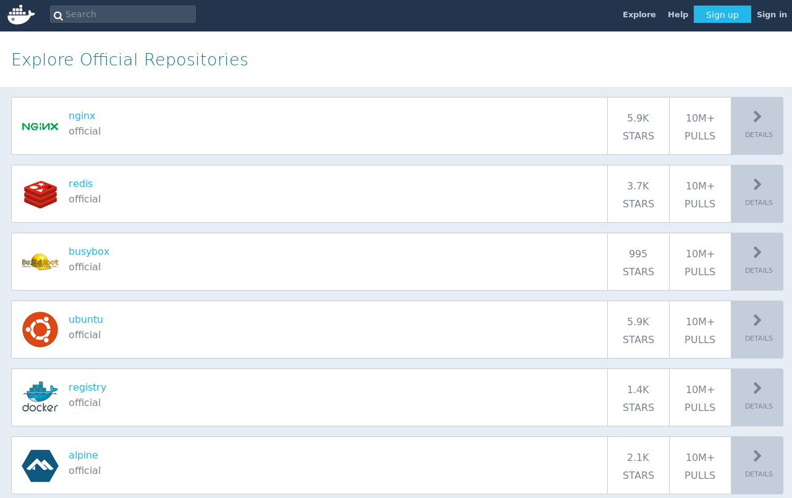
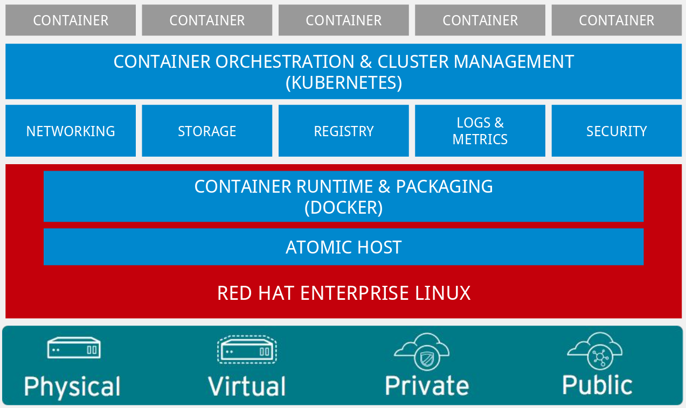

Kubernetes
y computación cloud
Marta Gómez y Braulio Vargas
Sobre nosotros
- Estudiante de Ingeniería Informática con mención en Computación y Sistemas Inteligentes.
- Organizador de Python Granada.
- Colaborador en Geek & Tech Girls.
- Estudiante de Ingeniería Informática con mención en Computación y Sistemas Inteligentes.
- Fundadora de Geek & Tech Girls.
- Organizadora de Python Granada.
Índice
- Docker y los contenedores.
- Qué es un contenedor.
- Imágenes docker.
- Capas en un contenedor.
- Capas en una máquina virtual.
- Clústering de contenedores: Dockerswarm y Kubernetes.
- Docker swarm.
- Kubernetes.
- Terminología de Kubernetes.
- Usando OpenShift para crear y subir aplicaciones.
Docker y los contenedores
Qué es un contenedor
Imágenes Docker
Capas en un contenedor
Capas en una máquina virtual
Clústering y contenedores: Docker Swarm y Kubernetes
Docker Swarm
- Hecha para hacer clústers de contenedores Docker.
- Trabaja con la misma API que Docker.
- Presenta las mismas desventajas que Docker.
- En caso de que la API no soporte algo, ese algo no podrá ser instalado en todo nuestro clúster.
Kubernetes
- Orquestador de contenedores (Docker).
- Desarrollado por Google.
- Escrito en Go.
¿Por qué no usar directamente contendores Docker?
- Docker no es capaz de ver nada más allá del host que ejecuta el contenedor.
- Si tenemos varios contenedores, estos no pueden ser vistos como una sola unidad.
- Por sí mismo, Docker no es capaz de manejar y desplegar una gran cantidad de aplicaciones.
Terminología de Kubernetes
Kubernetes Pods y los minions.
Kubernetes Pods y los minions.
Los Pods son la unidad más básica que puede desplegar Kubernetes. Encapsula una aplicación en un contendor (Docker).
Estos contenedores con una aplicación específica se conocen como Kubernetes nodes, antes conocidos como minions.
Hay dos tipos: los que ejecutan un único contenedor y los que ejecutan varios contenedores.
Pods que ejecutan varios contenedores
Controller
Se encarga de crear y controlar varios Pods, de replicarlos, desplegarlos y mantener el clúster. Hay tres tipos:
- Deployment.
- StatefulSets.
- DaemonSets.
Kube-proxy
Es el proxy de red de Kubernetes, está presente en cada uno de los nodos del clúster y podemos configurarlo en función de los servicios que vaya a dar cada uno de los nodos. Provee un DNS para nuestro clúster.
El poder de Kubernetes
- Automatiza una gran cantidad de tareas.
- Ofrece balanceo de carga y administra el almacenamiento.
- No está obligado a usar contenedores Docker (flexibilidad).
- Se puede usar para administrar clústers, aunque no sean de contenedores.
- Tiene una configuración complicada.
- Usado en una gran cantidad de plataformas cloud, como por ejemplo OpenShift.
Usando OpenShift para crear y subir aplicaciones
Tipos de servicios cloud
- Software as a service.
- Infrastructure as a service.
- Platform as a service.
¿Qué es OpenShift?
OpenShift se encuentra dentro del PaaS. Nos abstrae del hardware y SO subyacente y nos permite centrarnos en el desarrollo de nuestra aplicación. Soporta los framework más populares y es software libre.
Ha sido desarrollado por Red Hat y se basa en ofrecer contenedores Kubernetes con un software preinstalado.
Arquitectura de OpenShift
Crear un proyecto en la consola web de OpenShift